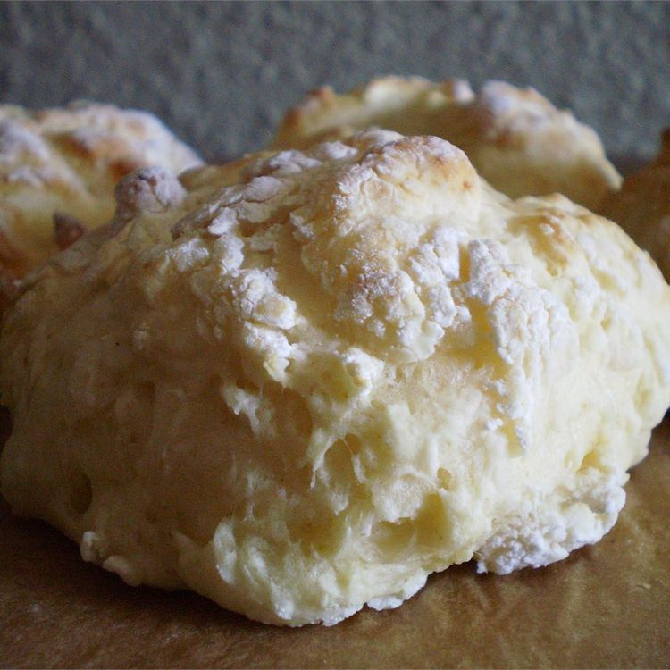

These biscuits are light and fluffy. Delicious!
Mix together flour, salt, baking soda, and baking powder. Add sour cream and mix to a soft dough. Add additional water if necessary.
With well floured hands shape dough into round biscuit shapes. Bake at 450 degrees F (230 degrees C) for 12 minutes.